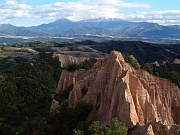

Bulgaria :: A Closer Look

|
Plovdiv and SurroundingsSuggestions for things to do and see in and around Bulgaria's second city. |

|
Veliko TârnovoVeliko Târnovo is one of inland Bulgaria's most popular destinations - this article explains why, and suggests some excursions in the surrounding area. |
|  |
The Pirin MountainsBansko and Melnik are good bases for exploring Bulgaria's mountainous south-west corner. |

|
SofiaSofia may not be one of Europe's most glamorous capitals, but give it a chance and you may find yourself falling for its slightly battered charms. |

|
Around SofiaSofia's transport connections make it a good base for exploring western Bulgaria. This article describes some suggested excursions, including Mount Vitosha, Koprivshtitsa, and the western Balkan Mountains. |

|
The Cyrillic Alphabet in the BalkansIf you are going to travel through Bulgaria, especially by public transport, it helps to be able to read the Cyrillic Alphabet. This page has a table of Cyrillic characters and their equivalents in the Latin alphabet. |